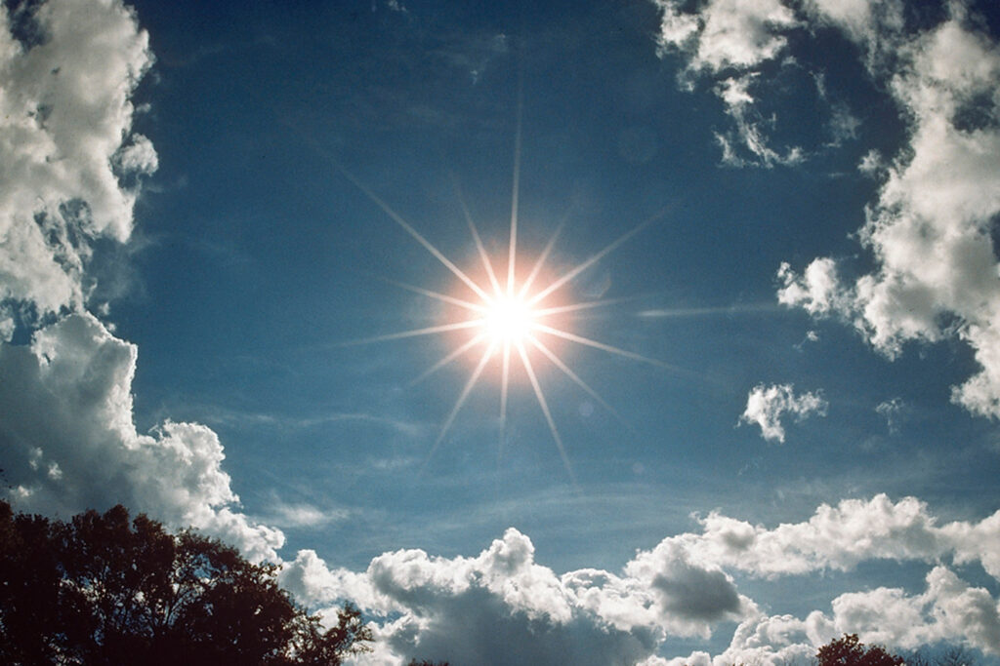
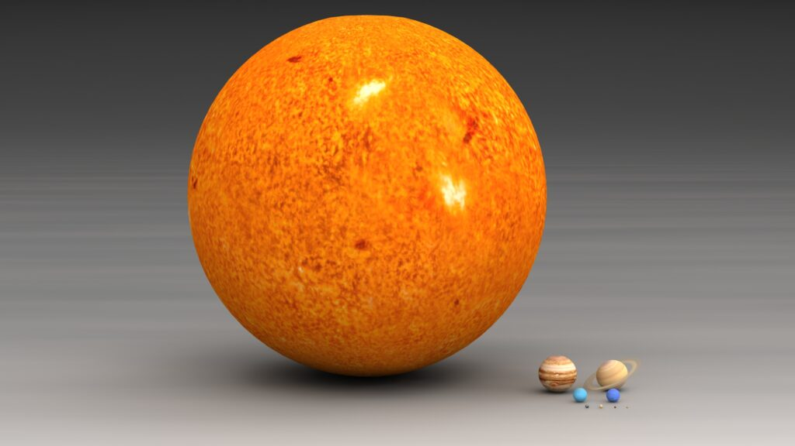
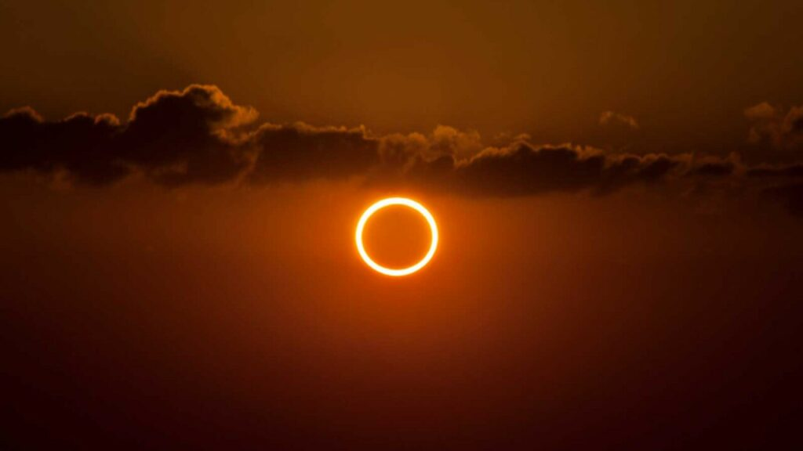

Чи знаєте ви? 7 цікавих фактів про Сонце
The Sun is the star at the center of the Solar System. It is a nearly perfect ball of hot plasma, heated to incandescence by nuclear fusion reactions in its core, radiating the energy mainly as light, ultraviolet, and infrared radiation. It is the most important source of energy for life on Earth.
The Sun's radius is about 695,000 kilometers (432,000 miles), or 109 times that of Earth. Its mass is about 330,000 times that of Earth, comprising about 99.86% of the total mass of the Solar System. Roughly three-quarters of the Sun's mass consists of hydrogen (~73%); the rest is mostly helium (~25%), with much smaller quantities of heavier elements, including oxygen, carbon, neon, and iron
1. Сонце — найближча до Землі зоря
Сонце — гігантська плазмова куля, розташована від нас на відстані майже 150 млн км, всередині якої відбуваються термоядерні реакції. Наше світило є типовою зорею класу G, що перебуває в середині свого життєвого циклу. Температура його поверхні складає 5780 Кельвінів. Через це спектр його випромінювання майже білий. Жовтуватий колір виникає під час проходження його променів крізь земну атмосферу.
Розповсюдження світил різного розміру у Всесвіті не однакове. Тому Сонце насправді є більшим, ніж 90 відсотків зір у його оточенні. Крім того, воно є еталоном. Саме по ньому ми судимо про те, як влаштовані інші подібні об’єкти.
2. Влітку Земля перебуває далі від Сонця, ніж узимку
Земля рухається навколо Сонця еліптичною орбітою. Тобто відстань від нього то збільшується, то зменшується впродовж року. При цьому зміна зими та літа пов’язана не з цим фактом, а з нахилом вісі до екліптики. Тож коли у північній півкулі настає літо, то у південній — зима, і навпаки.
При цьому перигелій — найближчу до Сонця точку орбіти — Земля проходить у січні, коли у північній кулі саме середина зими. А афелій — найбільш віддалену точку — відповідно, влітку. Цього року це станеться 4 липня.
3. Маса Сонця у 500 разів більша, ніж в усіх планет навколо нього
Сонце складає 99,866 відсотка маси Сонячної системи. Це означає, що воно важить приблизно у 500 разів більше, ніж усі планети та астероїди разом узяті. Навіть маса Юпітера складає всього одну тисячну від маси нашого світила.
Що стосується Землі, то вона приблизно у 333 тис. разів легша за Сонце. Всередині нього могли б поміститися 1,3 млн землеподібних планет. При цьому густина нашої зорі приблизно на 40 відсотків більша, ніж у води.
4. Сонце має корону
Сонячна корона — це зовнішня оболонка нашого світила. Вона складається з протуберанців і різноманітних плазмових вивержень. Зазвичай ці утворення мають протяжність у сотні тисяч кілометрів, тобто є довшими, ніж відстань від Землі до Місяця.
При цьому сонячна корона — одна з найгарячіших частин нашого світила. В середньому її температура складає 1 — 2 млн кельвінів. Однак інколи у ній виникають гарячі ділянки, спека в яких може сягати 20 млн кельвінів. Сонячну корону можна побачити з Землі, якщо спостерігати за нашим світилом під час його повного затемнення Місяцем.
5. На Сонці є плями
Шар поверхні Сонця, який випромінює видиме світло, називається фотосферою. У ній існують холодніші ділянки, що видаються темними. Дивитися на наше світило крізь телескоп не можна, але якщо застосувати темні фільтри, то великі групи плям стають видимими.
Сонячні плями — це ділянки на поверхні Сонця, де силові лінії його магнітного поля перекручуються і розриваються. Через це саме в таких районах виникають потужні викиди плазми, які називаються сонячними спалахами. Для вивчення цих процесів запущений апарат Solar Orbiter.
6. Сонячний вітер може викликати магнітні бурі на Землі
Магнітне поле Сонця весь час прискорює заряджені частинки, які називаються сонячним вітром. Зазвичай його інтенсивність занадто слабка, щоб нашкодити людям на Землі.
Але під час сонячних спалахів може викидатися велика кількість заряджених частинок. Іноді при цьому від нашої зорі може навіть відірватися великий шматок плазми. Це явище називається корональним викидом.
7. Повні сонячні затемнення колись припиняться
Сонячне затемнення — це ситуація, коли Місяць опиняється між Землею та Сонцем і закриває собою світило повністю або частково для певної ділянки нашої планети. Орбіта нашого супутника нахилена відносно площини екліптики, тому це стається не кожні 29 —30 діб (тривалість повного циклу місячних фаз), а від двох до п’яти разів на рік.
Повне сонячне затемнення відбувається, коли Місяць затуляє Сонце повністю. Бувають ще часткові та кільцеподібні затемнення. Останні спостерігаються, коли наш природний супутник перебуває у дальній частині своєї орбіти та його диск стає занадто малим.
Приблизно через 600 млн років повні сонячні затемнення припиняться. Місяць поступово віддалиться від нас на відстань, на якій він весь час буде здаватися меншим за Сонце. Тоді можна буде спостерігати лише часткові та кільцеподібні затемнення.